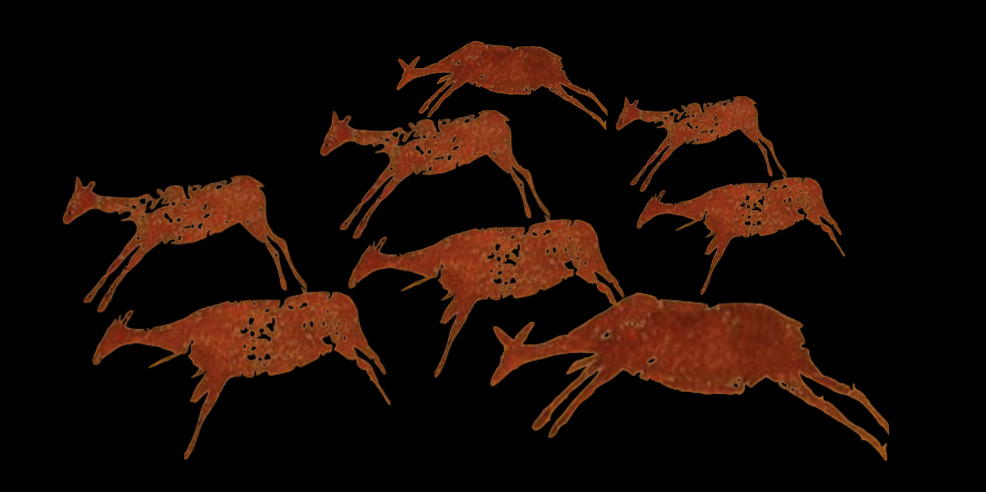
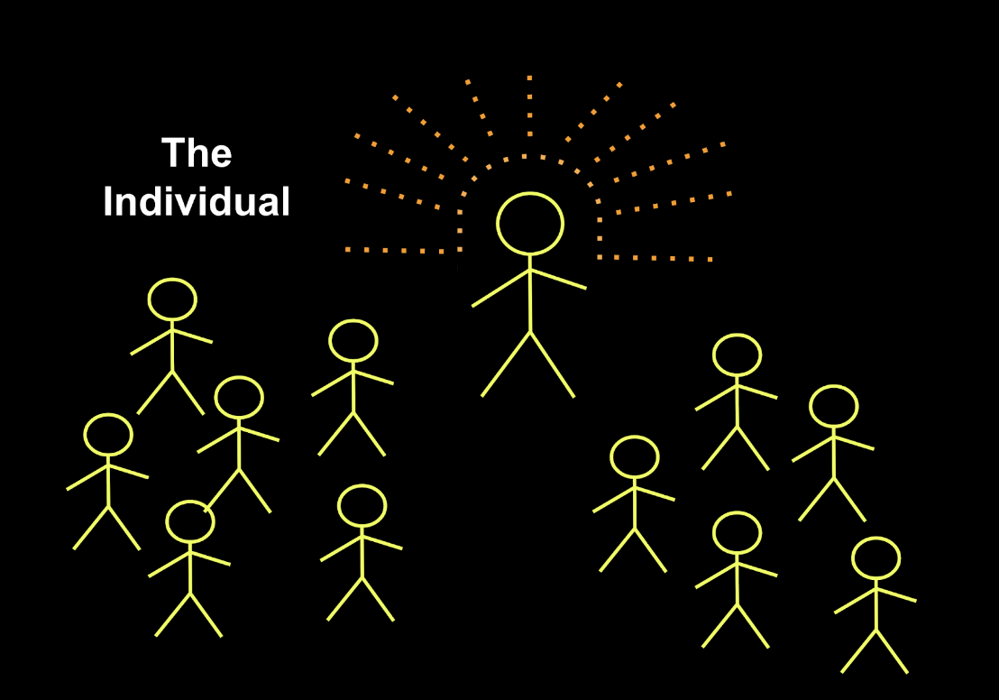

:: .16 ::
Hector was asleep, so there was nobody to stop the Bellipotentate from dipping a paintbrush into a can of red paint before streaming it across the living room wall.
“In the beginning, amidst the chaos,” Andy said, “there emerged a herd.”

“The herd had simple goals: to stave off the terrible hunger pangs that afflicted them by devouring the grasses. To drink water from puddles and streams, to stave off the terrible thirst that inevitably arose. To flee from that which they feared. To stay together with others like them. I’m
“But alas, another pang existed. One which caused the herd to continue to exist despite the inevitability of [telomere-shortening, as a result of mitosis, reaching the Hayflick Limit].”
“The urge to [procreate]?” Luuk asked.

“The urge to procreate,” Andy said, “is the harbinger of the individual. Due to the profound material requirements of nurturing an act of gametic-synthesis into a viable member of the aforementioned herd, circumspection and increased judiciousness began to be applied to the mating process.”
Jakob looked at Luuk and whispered loudly: “Sexual selection.”